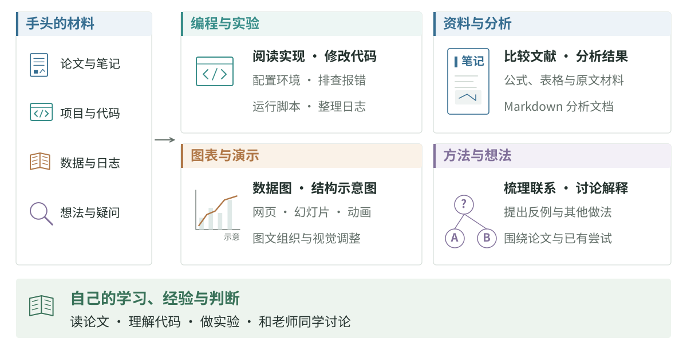

读论文遇到不懂的公式、复现代码报错，或是想找人讨论一个想法时，都可以试着让 AI 帮忙。除了对话，编程 AI 还可以直接读取项目、修改代码和运行程序；整理笔记、分析实验结果、画图，也可以结合手头的材料来做。

编程与实验
TRAE、WorkBuddy、Claude Code、ZCode 和 Codex 都可以参与项目开发。复现论文时，可以结合原文和代码，让它梳理实现、配置环境、修改脚本和排查报错；有了想尝试的改动，也可以在现有项目上继续实现。
实验跑起来以后，整理日志、比较不同配置的结果、绘制曲线，也适合交给 AI 协助完成。数据位置、运行环境和可用算力，可以随任务一起说明。
资料整理与分析
阅读论文时，可以结合原文、公式、方法图和代码讨论。已经有了一批材料，还可以把研究问题与笔记目录一起提供，让 AI 比较几项工作的做法，整理相关实验和仍未弄清的问题。论文笔记工作流里有 Zotero、Obsidian 与本地 AI 工具的配置。
Markdown 很适合保存分析过程。 文字、公式、代码片段、表格与图片可以放在同一份文档里，也方便继续修改。比如一次实验分析，可以把比较条件、结果图、异常样本和当前解释写在一起；新结果出来后，继续更新对应部分。Markdown 基础语法介绍这些格式。
图表与演示
已有分析和材料，可以继续让 AI 整理成图表、网页或幻灯片。数据图可以从 CSV 和实验日志生成，模型结构可以画成示意图，需要展示变化过程时，也可以制作交互页面或动画。
准备组会或交流时，可以让 AI 根据听众、时长和研究材料整理讲稿与幻灯片，再调整讲述顺序、图的配色和布局。相关材料见写作、画图和汇报。
讨论方法与研究想法
刚有一个想法，或者对某个结果有几种解释时，也可以和 AI 聊聊。把相关论文、已经做过的尝试和当前的疑问放在一起，可以讨论方法之间的联系、可能遗漏的因素，以及还有哪些做法值得尝试。
Grill Me 采用连续追问的方式，相关工具见 paper-tools-marketplace，用法见论文阅读与讨论。常用的提示词、处理步骤与输出格式，也可以保存为 skill。
避免被 AI 带着走
和 AI 讨论研究时，它可能会顺着你的想法补出动机、方法和一套听起来很合理的解释。聊得越顺，越容易忽略其中的跳跃，甚至把它的肯定当成自己想对了。它提出的理由是否成立，与读过的论文、做过的实验是否一致，还是要自己想清楚；有分歧的地方，也可以和老师、同学继续讨论。
自己的学习、经验和判断更重要。 读论文、理解代码、亲手做实验的积累，会影响你能问出什么问题、怎样判断它的建议。和 AI 一起推进工作时，碰到真正妨碍理解的知识，也值得停下来认真补上，逐渐形成自己对问题和方法的认识。
两篇 AI 观察文章讨论 AI 互动中的信念强化，以及学生怎样使用和理解 AI。
相关资料
Lilian Weng 的 Agent 文章介绍规划、记忆与工具使用；Building effective agents讨论工作流和 Agent 的系统组织方式。